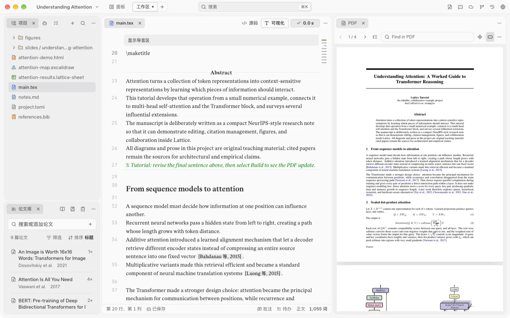

写作
编辑器
.tex 文件在源码编辑器中打开，输入时有补全和诊断。编辑器上方可以切换：
- 源码：LaTeX 原文。
- 可视化：同一个文件，标题、强调、公式、列表和图片直接渲染出来。编辑的仍是同一份文本，随时可以切回。
这个选择对所有 .tex 文件生效，并会被记住；编辑器上方的 ⋯ 菜单里也有。

写作时常用的功能：
- 格式快捷键：
⌘B加粗、⌘I强调、⌘⇧M行内公式、⌘/注释一行、⌘⌥E套上公式环境、⌘⇧E套上任意环境、⌘⌥I列表（itemize）、⌘⌥M数学符号。完整列表见 快捷键（⌘?）。 - 查找替换：
⌘F在当前文件，⌘⇧F在整个项目。 - 跳转：
⌘P打开任意文件，⌘G跳到某行，⌘⇧O跳到某节或某个 label。 - 大纲：编辑器右边缘的标记代表文档的各节；把指针停在上面会弹出 大纲 列表，列出每节的编号、标题和所在的 PDF 页，点一项即可跳过去。PDF 工具栏的 大纲 按钮列出同样的章节。
- 引用：光标放在某个
\cite的 key 上，按⌘⌥K显示它指向的文献卡片。见 引用与论文库。 - Markdown 笔记、表格、HTML 页面、幻灯片和 白板 都放在同一个项目里，用各自的编辑器打开。Typst 文档见 单独一页。
- 代码文件：Python、TypeScript、JavaScript、Rust、Go、C 和 C++、Java、R、Lua、Shell 脚本、YAML、TOML、JSON、Makefile、Dockerfile、CSS、HTML 和 BibTeX 打开即有语法高亮。Markdown 笔记里这些语言的代码块也会高亮，颜色与同一语言的文件一致，都来自 代码主题。
- Markdown 表格：在可视编辑器里拖动列边框可以调整列宽，双击边框则让这一列适应内容宽度。拖动一行的下边框可以把这一行拉高，双击则让这一行恢复内容高度。下次打开文件时列宽和行高保持不变，.md 文件本身仍是普通的 Markdown。
- 表格文件：按住 Control 点按或右键点按会打开单元格的菜单；按住
⌘点按会在选区中再加一个范围。
Lattice 边写边保存。状态栏显示行号和列号、文件是否已保存，以及字数。
选中文字再处理
在编辑器里选中文字，会出现一个小工具栏：校对（⌘⌥P）、润色、按指令改写 和 批注。前三个让 AI 助手给出修改，每处都附带理由，你在原处接受或拒绝；批注 留下一条之后再处理的意见。见 AI 助手。
源码旁边的 PDF 以及两者之间的跳转，见 编译与排错。